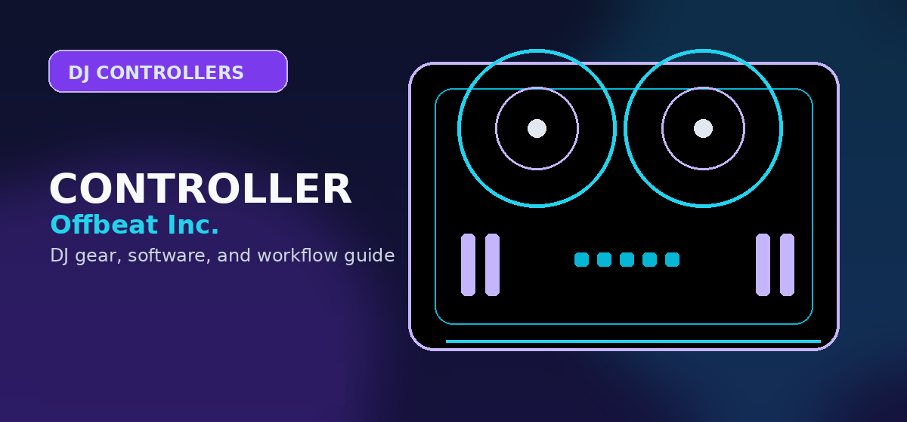

How to Connect a DJ Controller to Speakers (Step-by-Step)
Exact cable connections for DJ controllers to powered speakers, PA systems, and home stereos — with diagrams and cable recommendations.

Connecting a DJ controller to speakers sounds simple until you have four different output jacks, three different cable types, and two sets of speakers that each accept different inputs. This guide covers every common wiring scenario, the cable types you need, gain structure, and how to diagnose hum and grounding issues — so you get clean audio the first time, without trial and error at the venue.
Step 1: Identify Your Controller's Output Jacks
Before buying cables, check your controller's rear panel. Most controllers have one or more of:
| Output Type | Looks Like | Balanced? | Max Run | Common On |
|---|---|---|---|---|
| RCA (Stereo) | Red/white cinch connectors | ❌ Unbalanced | ~15 feet before noise | Most budget controllers |
| 1/4" TRS | Standard headphone-jack size, stereo (TRS = Tip-Ring-Sleeve) | ✅ Balanced | 100 feet+ | Mid-range controllers |
| XLR | Round 3-pin locking connector | ✅ Balanced | 100 feet+ | Higher-end controllers |
| 3.5mm Stereo | Headphone-jack size on budget devices | ❌ Unbalanced | ~10 feet | Entry-level/phone DJ |
Also note: Your controller likely has a "Master Out" and a "Booth Out." Master Out goes to your main speakers/PA. Booth Out goes to your monitor speaker (facing you). Use Master Out for connecting to your primary speakers.
Step 2: Identify Your Speaker's Input Jacks
Powered (active) speakers typically accept:
- XLR input — the most common on DJ-spec powered speakers (Mackie, QSC, JBL EON series)
- 1/4" TRS input — standard on studio monitors (Yamaha HS, KRK Rokit)
- RCA input — on budget powered speakers and home stereo gear
- Combo XLR/TRS input — a single jack that accepts either, common on mid-range speakers
Wiring Scenarios: Every Common Setup
Scenario 1: RCA Controller → XLR Powered Speaker
This is the most common beginner scenario. You need an RCA-to-XLR cable (also called RCA to Male XLR).
Note: RCA is unbalanced and XLR is balanced, but the cable itself is just a physical adapter — it does not convert or balance the signal. For runs under 15 feet you won't notice noise; for longer runs, a fully balanced connection (TRS or XLR at both ends) is the better choice.
Scenario 2: RCA Controller → RCA Powered Speaker
The simplest setup. Use a standard RCA-to-RCA cable (the same type as home stereo connections). No signal conversion occurs. Works perfectly for home practice. Keep cable runs under 15 feet to avoid hum pickup.
Scenario 3: 1/4" TRS Controller → XLR Powered Speaker
This is actually the cleanest connection type available at this price range. Both sides are balanced, meaning the cable rejects interference from nearby power cables, lights, and electronics. Use 1/4" TRS to XLR cables (also called "Balanced TRS to XLR").
This is the recommended connection for any controller with both TRS and RCA outputs — use the TRS outputs.
Scenario 4: Controller → Studio Monitors (1/4" TRS Input)
If your speakers are studio monitors (Yamaha HS7, KRK Rokit, etc.) with 1/4" TRS inputs:
- From TRS controller out: use TRS-to-TRS cables (standard instrument cables work, but use stereo TRS-to-TRS, not mono TS cables)
- From RCA controller out: use RCA-to-TRS cables
- Studio monitors typically have lower output levels than PA speakers — bring up the monitor's input gain or preamp for room level, and keep the software master near 0dB rather than pushing it above unity
Scenario 5: Controller → Passive Speakers (Require an Amplifier)
Never connect a DJ controller directly to passive speakers. DJ controllers do not output amplified speaker-level signals — only line-level signals. You need a power amplifier between the controller and passive speakers:
- Controller Master Out (RCA/TRS) → Amplifier Input
- Amplifier Speaker Outputs → Passive Speaker terminals
Passive setups are used for permanently installed systems (built-in ceiling speakers, outdoor speaker arrays). For portable DJ setups, powered (active) speakers are far simpler and recommended.
Gain Structure: Setting Levels Correctly
Poor gain structure is the main cause of distorted or thin-sounding audio. Follow these steps in order:
- Power-up order: Start every volume and gain control at minimum before switching on the powered speakers — powering into a hot input can damage them.
- Controller software master level: Set to 0dB (the unity gain line in your DJ software). Peaks hitting occasionally up to +3dB is fine. Constant clipping (red lights) causes distortion.
- Controller hardware master knob: Start at 12 o'clock (50%). Adjust up if volume is low.
- Speaker/amplifier input gain: Start at minimum, then increase until you have adequate volume without the speaker's input clip light flashing.
- Speaker volume knob: Final fine-tuning. This is your room-level control.
Diagnosing and Fixing Common Audio Problems
Hum or Buzz in the Audio
A low-frequency hum (50/60Hz) usually indicates a ground loop — multiple pieces of gear plugged into different AC circuits with different ground potentials. Fix options (try in order):
- Plug all gear (controller, speakers, laptop) into the same power strip
- Use balanced cables (TRS or XLR) — they reject common-mode interference
- Use a ground-loop isolator inline between the controller and the speakers
No Sound Despite Correct Connections
Check in order: (1) DJ software audio output routing — confirm master output is set to the correct soundcard. (2) Controller driver installed? Some controllers require a USB audio driver. (3) Cable swapped? Try a different cable. (4) Speaker powered on and input selector set to the correct input jack? If laptop system audio plays fine but your DJ software is silent, the software is likely using the wrong output device — in your DJ software's audio settings, select the controller as the audio output.
Sound from Only One Speaker
Check that the RCA or 1/4" plug is fully seated at both the controller and the speaker — a partially inserted connector is the most common cause. Swap in a known-good cable to rule out a faulty one.
Distorted Sound at Low Volume
This usually indicates clipping at the source. Lower the master output in your DJ software until the master meter no longer clips. Then turn up the speaker volume to compensate. Do not push the software master to boost volume — that's what the speaker amplifier is for.
Cable Buying Guide
| Cable Type | When To Use |
|---|---|
| RCA to XLR | Budget controller → PA speaker |
| TRS to XLR (balanced) | Mid-range controller → PA speaker |
| XLR to XLR | XLR controller out → XLR speaker |
| RCA to TRS | Budget controller → studio monitors |
| 3.5mm to RCA | Laptop/phone aux → home speakers |
Cable prices vary by retailer and change over time — check current listings before you order.
Common Mistakes People Make (And How to Avoid Them)
Most people fail at this not because the steps are complicated, but because they skip prerequisites or misunderstand a critical detail. The most common mistakes are: (1) using a cable that fits physically but is wired for the wrong input, which causes silent output or only one channel, (2) setting the controller and the amplifier levels independently without checking the combined gain, which leads to distortion or noise the moment the music gets loud, and (3) leaving a long or loose connection unsecured, which results in crackle, dropouts, or a dead channel mid-set. All three show up in a deliberate first test run. Understanding these pitfalls prevents wasted time.
Advanced Optimization and Pro Tips
A few habits that make rewiring and sound checks faster at a venue: set the controller's master first, then the amplifier or speaker input gain, and only touching volume after both are set, marking each cable's ends before the first run so re-wiring at the next venue takes seconds, and doing a brief level check at performance volume before an audience arrives rather than mid-set. Test them after mastering basics.
Connection Scenarios
| Your Setup | Connection Type | Cable Needed |
|---|---|---|
| DJ controller → powered speakers (common home setup) | Direct connection, no mixer needed | RCA pair to dual XLR, or RCA to 6.3mm TRS depending on speaker inputs |
| DJ controller → passive speakers via amplifier | Controller → amp → speakers | RCA to RCA (controller to amp); speaker wire (amp to speakers) |
| CD players or turntables → DJ mixer → powered speakers | Line-level input → mixer → speakers | RCA pair from players to mixer inputs; XLR from mixer master to speakers |
| Controller → Bluetooth speaker (casual practice) | 3.5mm aux, or a Bluetooth transmitter on the headphone jack | 3.5mm from the controller's aux/headphone output to the speaker's aux input; expect 40-200ms Bluetooth latency |
| Controller → PA system (club or event) | Use XLR master outputs if available, otherwise RCA to XLR | XLR male to XLR female (balanced); keep RCA runs under ~15 feet |
Buying advice and compatibility checks
Use this section to sanity-check the controller-to-speaker connection against your actual setup before comparing prices.
Best fit
DJs who need the correct cable path from a controller, mixer, or interface to monitors or a PA.
Skip if
Readers looking for speaker rankings only; use monitor or PA buyer guides instead.
Compatibility checks
Match output level and connector type: RCA, TRS, XLR, balanced, unbalanced, stereo, mono, booth, and master outputs are not interchangeable.
2026 update
USB-C is more common on controllers, but speaker connection quality still depends on the analog audio outputs.
Price caveat
Cheap adapters can introduce hum or weak connections. Buy the shortest correct cable rather than chaining adapters.
Recommendation logic
Identify the exact output on the controller first, then choose the speaker/input path.
| Buying check | What to verify | Why it matters |
|---|---|---|
| Setup fit | Inputs, outputs, operating system, software tier, and accessories | Prevents buying gear that looks right but fails in the actual rig. |
| Upgrade path | Whether the product still makes sense after six to twelve months | Reduces duplicate purchases and rushed upgrades. |
| Total cost | Required cables, cases, subscriptions, replacement parts, and backups | The lowest listing price is often not the true working setup cost. |
Official spec and support links
Check current specs, supported software, firmware, and accessory requirements at the source before buying.
Frequently Asked Questions
Can I use Bluetooth speakers with a DJ controller?
Technically yes via a 3.5mm aux output or a Bluetooth transmitter plugged into the headphone jack, but Bluetooth adds 40-200ms of audio latency. This makes beatmatching visually unreliable — your cue headphones will be ahead of the room sound, and the delay creates an uncanny sensation. For any serious practice or performance, use wired speakers only. Bluetooth speakers are acceptable for brief, casual background listening only.
Do I need powered (active) or passive speakers for home DJing?
Powered (active) speakers are strongly recommended for home DJ setups. They contain a built-in amplifier, so you only need one cable per speaker (the signal cable). Passive speakers require a separate power amplifier, additional cabling, and impedance matching — significantly more complexity for a home setup with no benefit.
What is the difference between Master Out and Booth Out on a controller?
Master Out is the primary output that goes to your main PA speakers or room speakers — this is the signal your audience hears. Booth Out is a separate output for a monitor speaker facing you — this is what you hear behind the decks to monitor your mix. For a home setup with one pair of speakers, use Master Out. If you have a second speaker you want facing you, connect it to Booth Out.
Why is there a humming noise from my speakers?
A low-frequency hum (50Hz or 60Hz) is almost always a ground loop — different pieces of equipment plugged into different AC outlets with slightly different ground potentials. Fix: plug your controller, speakers, and laptop into the same power strip. If the hum persists, switch to balanced cables (TRS or XLR) which reject ground-loop interference. A ground-loop isolator inline between the controller and the speaker is a reliable last resort.
Can I connect a DJ controller to a TV or home stereo receiver?
Yes. Most home AV receivers and soundbars have RCA inputs (the red/white ports). Connect the controller's RCA Master Out to a free RCA input on the receiver, then select that input on the receiver. For smart TVs without an analog input, use a DAC (digital-to-analog converter) or an HDMI audio extractor with RCA output. The controller's 3.5mm headphone output also works for a quick connection to a 3.5mm aux input on a stereo (it's the same as a phone aux connection).